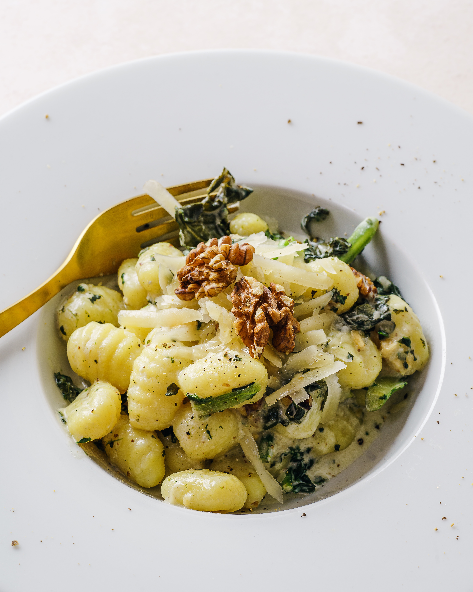

Gnocchi

Description:
Gnocchi (singular gnocco) are Italian dumplings made with flour, eggs, and potatoes.
Gnocchi can be served in tomato sauce,
tossed with pesto, or sautéed with butter and herbs.
Ingredients:
- Potatoes – best to use Yukon Gold or Russet
- Flour – all purpose
- Salt
- Egg – room temperature
Steps:
- In a large pot boil un peeled potatoes until tender, remove from the pot and let cool enough to handle, then remove the skin.
- Then pass through a Potato Ricer or mash.
- On a flat surface mix together the flour and salt make a well in the middle and add the potatoes and egg, mix together with your fingers to form a soft dough, it should not stick to your fingers.
- On a lightly floured surface, cut small amounts of dough to form ropes and cut into 3/4 inch (2 cm) pieces, then slide each piece on a fork and squeeze a little (but not too hard).
- Sprinkle with a little bit of flour and toss, so they don’t stick together.
- Let the gnocchi rest for 20 minutes before cooking.
- In a large pot of salted boiling water cook the gnocchi, gnocchi are ready when they float to the top.
- Drain and toss with desired sauce.
All Recipes